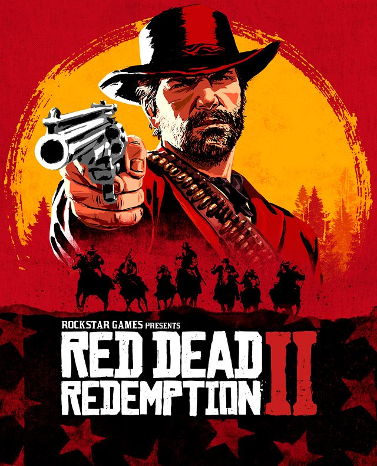

AMÉRICA, 1899
Red Dead Redemption II
O fim da era dos fora-da-lei. Uma gangue em fuga, um homem em busca de redenção e um mundo que não tem mais lugar para eles.
Conheçar a Historia Descubra sua Honra
O fim da era dos fora-da-lei. Uma gangue em fuga, um homem em busca de redenção e um mundo que não tem mais lugar para eles.
SOBRE A OBRA
Red Dead Redemption 2 é um jogo de ação e aventura criado e publicado pela Rockstar Games. Foi lançado em 26 de outubro de 2018 para PlayStation 4 e Xbox One e chegou ao PC em 5 de novembro de 2019. É o terceiro jogo da série Red Dead e um prelúdio de Red Dead Redemption (2010): a história se passa doze anos antes, em 1899.
O mundo foi desenhado a partir de lugares reais dos Estados Unidos. São cinco estados, com 200 espécies de animais, aves e peixes e 19 raças de cavalos, cada uma com comportamento próprio.

CÓPIAS VENDIDAS NO MUNDO
NO METACRITIC
DE DESENVOLVIMENTO
ESPÉCIES DE ANIMAIS
ANIMAÇÕES NO JOGO
DE MUNDO PARA EXPLORAR